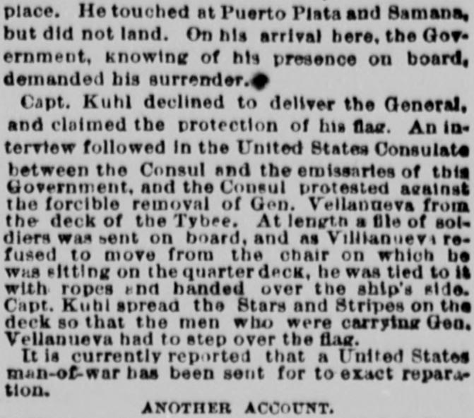
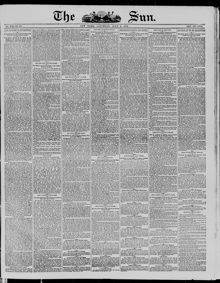

An law IT tervtew followed In the United State Oonauiate VUna entrevista tuvo lugar en el Consulado de los Estados Unidos
The Sun. New York [N.Y.], July 8, 1876. Page 1. Published by Benj. H. Day. A daily newspaper, 1833–1916.The Sun. New York [N.Y.], 8 de julio de 1876. Página 1. Publicado por Benj. H. Day. Periódico diario, 1833–1916. View the originalVer el original


See the full pageVer la página completaThe American steamship \1, commanded by C. J. F. Kuhl, arrived in San Domingo on June 7th with passenger Gen. Pablo Villanueva, a former Minister of War under Báez and González who sought to retire on his estates. Although the local government demanded his surrender, Capt. Kuhl refused and claimed the protection of the American flag, while the U.S. Consul protested the forcible removal during an interview at the consulate. Ultimately, soldiers boarded the vessel, tied Villanueva to a chair with ropes, and handed him over the ship's side while Capt. Kuhl spread the Stars and Stripes on the deck, leading to current reports that a U.S. man-of-war has been sent to exact reparation.A tenor del extracto facilitado, el vapor estadounidense \1, al mando de C. J. F. Kuhl, arribó a Santo Domingo el 7 de junio con el pasajero general Pablo Villanueva, exministro de Guerra bajo Báez y González, quien pretendía retirarse a sus posesiones. Pese a que el gobierno local demandó su entrega, el capitán Kuhl se negó amparándose en la bandera estadounidense, al tiempo que el cónsul de EE. UU. protestó por la extracción forzosa durante una entrevista en el consulado. Finalmente, los soldados abordaron la nave, ataron a Villanueva a una silla con sogas y lo descendieron por el costado del buque mientras el capitán Kuhl extendía las barras y estrellas en cubierta, motivando los despachos actuales según los cuales se ha enviado un buque de guerra estadounidense para exigir satisfacciones.
FULL TEXT:TEXTO COMPLETO:
AN INSULT TO BE RESENTEDUN INSULTO QUE DEBE SER RESENTIDO
WHERE THE UNITED STATES WILL DEMAND REPARATION.DONDE LOS ESTADOS UNIDOS DEMANDARÁN REPARACIÓN.
Our Flag Dishonored by a Power that Probably has not yet Employed the Son-in-Law of the Secretary of State as Counsel.Nuestra Bandera deshonrada por una Potencia que probablemente aún no ha empleado al yerno del Secretario de Estado como abogado.
SAN DOMINGO, June 29.—The Stars and Stripes have been insulted by the Government of this country in the roadstead of this capital. The Baezist General, Villanueva, has, since the election of Espallart to the Presidency of this republic, been endeavoring, on the Haytian frontier, in the neighborhood of Cape Hayti, to foment a revolution against the existing Government of this republic, and several skirmishes have occurred on the border line in the northwestern part of the territory, resulting in the killing of fifty or sixty Dominicans. For a purpose which has not hitherto transpired—Gen. Villanueva says, for the purpose of settling some private business affairs in this capital—he took passage in the steamer Tybee from this place. He touched at Puerto Plata and Samana, but did not land. On his arrival here, the Government, knowing of his presence on board, demanded his surrender.SANTO DOMINGO, 29 de junio.—Las Barras y Estrellas han sido insultadas por el Gobierno de este país en la rada de esta capital. El general baecista, Villanueva, ha estado, desde la elección de Espallart a la Presidencia de esta república, intentando, en la frontera haitiana, en la vecindad de Cabo Haitiano, fomentar una revolución contra el Gobierno existente de esta república, y han ocurrido varias escaramuzas en la línea fronteriza en la parte noroeste del territorio, resultando en la muerte de cincuenta o sesenta dominicanos. Con un propósito que hasta ahora no ha trascendido—el general Villanueva dice, con el propósito de arreglar algunos asuntos privados de negocios en esta capital—tomó pasaje en el vapor Tybee desde este lugar. Tocó en Puerto Plata y Samaná, pero no desembarcó. A su llegada aquí, el Gobierno, sabiendo de su presencia a bordo, demandó su entrega.
Capt. Kuhl declined to deliver the General, and claimed the protection of his flag. An interview followed in the United States Consulate between the Consul and the emissaries of this Government, and the Consul protested against the forcible removal of Gen. Vellanueva from the deck of the Tybee. At length a file of soldiers was sent on board, and as Villianueva refused to move from the chair on which he was sitting on the quarter deck, he was tied to it with ropes and handed over the ship's side. Capt. Kuhl spread the Stars and Stripes on the deck so that the men who were carrying Gen. Vellanueva had to step over the flag.El capitán Kuhl se negó a entregar al General, y reclamó la protección de su bandera. Siguió una entrevista en el Consulado de los Estados Unidos entre el Cónsul y los emisarios de este Gobierno, y el Cónsul protestó contra la remoción forzosa del general Villanueva de la cubierta del Tybee. Al fin se envió a bordo una fila de soldados, y como Villanueva se negó a moverse de la silla en la cual estaba sentado en el alcázar, fue atado a ella con cuerdas y entregado por el costado del buque. El capitán Kuhl extendió las Barras y Estrellas en la cubierta de modo que los hombres que cargaban al general Villanueva tuvieron que pasar por encima de la bandera.
It is currently reported that a United States man-of-war has been sent for to exact reparation.Se informa corrientemente que se ha mandado a buscar un buque de guerra de los Estados Unidos para exigir reparación.
This collection gathers the coverage of the Dominican Republic in the American press, in the order it was published.Esta colección reúne la cobertura de la República Dominicana en la prensa estadounidense, en el orden en que se publicaron.